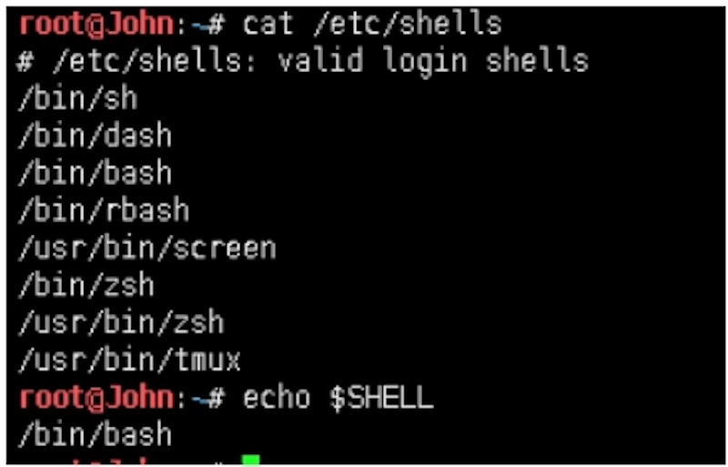
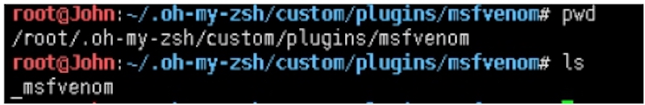
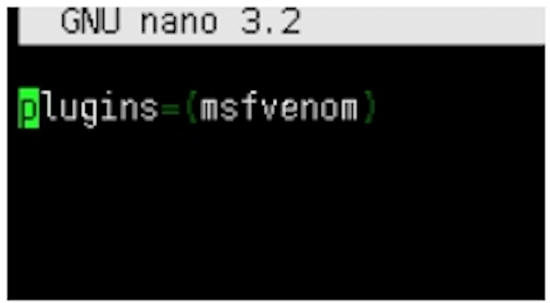
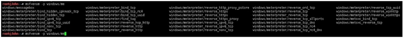
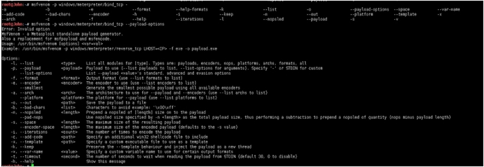

本课是针对前第1-20课时的msfvenom生成payload的自动补全命令补充。虽msfvenom强大，同样有着非常繁琐的参数，参数强大，意味着会增加工作效率，但它并不像MSF有命令补全功能，故本课吸取前20课经验，自动补全msfvenom的参数。
需要zsh的支持：
root@John:~# cat /etc/shells
# /etc/shells: valid login shells
/bin/sh
/bin/dash
/bin/bash
/bin/rbash
/usr/bin/screen
/bin/zsh
/usr/bin/zsh
/usr/bin/tmux
root@John:~# echo $SHELL
/bin/bash

复制附录A到~/.oh-my-zsh/custom/plugins/msfvenom文件夹下（注：没有msfvenom目录，创建即可）
root@John:~/.oh‐my‐zsh/custom/plugins/msfvenom# pwd
/root/.oh‐my‐zsh/custom/plugins/msfvenom
root@John:~/.oh‐my‐zsh/custom/plugins/msfvenom# ls
_msfvenom

编辑~/.zshrc文件：
root@John:~# nano ~/.zshrc
root@John:~# nano ~/.zshrc
root@John:~# cat ~/.zshrc
plugins=(msfvenom)

更新：
root@John:~# source ~/.zshrc
效果如下：


附录A：
#compdef msfvenom
#autoload
#
# zsh completion for msfvenom in Metasploit Framework Project (https://www.metasploit.com)
#
# github: https://github.com/Green‐m/msfvenom‐zsh‐completion
#
# author: Green‐m (greenm.xxoo@gmail.com)
#
# license: GNU General Public License v3.0
#
# Copyright (c) 2018, Green‐m
# All rights reserved.
#
VENOM_CACHE_FILE=~/.zsh/venom‐cache
venom‐clear‐cache() {
rm $VENOM_CACHE_FILE
}
venom‐cache‐payloads() {
if [ ‐x "$(command ‐v msfvenom)" ]
then
VENOM="msfvenom"
elif [ ‐n "$_comp_command1" ]
then
VENOM=$_comp_command1
else
echo "Cound not find msfvenom path in system env, please run msfvenom with path."
fi
if [[ ! ‐d ${VENOM_CACHE_FILE:h} ]]; then
mkdir ‐p ${VENOM_CACHE_FILE:h}
fi
if [[ ! ‐f $VENOM_CACHE_FILE ]]; then
echo ‐n "(...caching Metasploit Payloads...)"
$VENOM ‐‐list payload|grep ‐e "^.*\/" | awk '{print $1}' >>
$VENOM_CA CHE_FILE
fi
}
_msfvenom() {
local curcontext="$curcontext" state line
typeset ‐A opt_args
_arguments ‐C \
'(‐h ‐‐help)'{‐h,‐‐help}'[show help]' \
'(‐l ‐‐list)'{‐l,‐‐list}'[List all modules for type. Types are: paylo
ads, encoders, nops, platforms, archs, encrypt, formats, all]' \
'(‐p ‐‐payload)'{‐p,‐‐payload}'[Payload to use (‐‐list payloads to list,
‐‐list‐options for arguments). Specify ‐ or STDIN for custom]' \
'(‐‐list‐options)‐‐list‐options[List ‐‐payload <value> standard, adva
nced and evasion options]' \
'(‐f ‐‐format)'{‐f,‐‐format}'[Output format (use ‐‐list formats to li
st)]' \
'(‐e ‐‐encoder)'{‐e,‐‐encoder}'[The encoder to use (use ‐‐list encoders
to list)]' \
'(‐‐smallest)‐‐smallest[Generate the smallest possible payload using all
available encoders]' \
'(‐‐encrypt)‐‐encrypt[The type of encryption or encoding to apply to the
shellcode (use ‐‐list encrypt to list)]' \
'(‐‐encrypt‐key)‐‐encrypt‐key[A key to be used for ‐‐encrypt]' \
'(‐‐encrypt‐iv)‐‐encrypt‐iv[An initialization vector for ‐‐encrypt]' \
'(‐a ‐‐arch)'{‐a,‐‐arch}'[the architecture to use for ‐‐payload and ‐
‐encoders (use ‐‐list archs to list)]' \
'(‐‐platform)‐‐platform[The platform for ‐‐payload (use ‐‐list platfo rms
to list)]' \
'(‐o ‐‐out)'{‐o,‐‐out}'[Save the payload to a file]' \
'(‐b ‐‐bad‐chars)'{‐b,‐‐bad‐chars}'[Characters to avoid example: "\x0
0\xff"]' \
'(‐n ‐‐nopsled)'{‐n,‐‐nopsled}'[Prepend a nopsled of \[length\] size on
to the payload]' \
'(‐‐encoder‐space)‐‐encoder‐space[The maximum size of the encoded pay
load (defaults to the ‐s value)]' \
'(‐i ‐‐iterations)'{‐i,‐‐iterations}'[The number of times to encode t he
payload]' \
'(‐c ‐‐add‐code)'{‐c,‐‐add‐code}'[Specify an additional win32 shellcode
file to include]' \
'(‐x ‐‐template)'{‐x,‐‐template}'[Specify a custom executable file to use
as a template]' \
'(‐k ‐‐keep)'{‐k,‐‐keep}'[Preserve the ‐‐template behaviour and inject
the payload as a new thread]' \
'(‐v ‐‐var‐name)'{‐v,‐‐var‐name}'[Specify a custom variable name to use
for certain output formats]' \
'(‐t ‐‐timeout)'{‐t,‐‐timeout}'[The number of seconds to wait when re
ading the payload from STDIN (default 30, 0 to disable)]' \
'*: :($(__msfvenom_options))' && ret=0
lastword=${words[${#words[@]}‐1]}
case "$lastword" in
(‐p|‐‐payload)
_values 'payload' $(__msfvenom_payloads)
;;
(‐l|‐‐list)
local lists=('payloads' 'encoders' 'nops' 'platforms' 'archs' 'encrypt'
'formats' 'all')
_values 'list' $lists
;;
(‐encrypt)
local encrypts=('aes256' 'base64' 'rc4' 'xor')
_values 'encrypt' $encrypts
;;
(‐a|‐‐arch)
_values 'arch' $(__msfvenom_archs)
;;
(‐platform)
_values 'platform' $(__msfvenom_platforms)
;;
(‐f|‐‐format)
_values 'format' $(__msfvenom_formats)
;;
(‐e|‐‐encoder)
_values 'encoder' $(__msfvenom_encoders)
;;
(‐o|‐‐out|‐x|‐‐template|‐c|‐‐add‐code)
_files
;;
(*)
;;
esac
}
__msfvenom_payloads(){
local msf_payloads
# we cache the list of packages (originally from the macports plugin)
venom‐cache‐payloads
msf_payloads=`cat $VENOM_CACHE_FILE`
for line in $msf_payloads; do
echo "$line"
done
}
__msfvenom_archs(){
local archs
archs=(
'aarch64'
'armbe'
'armle'
'cbea'
'cbea64'
'cmd'
'dalvik'
'firefox'
'java'
'mips'
'mips64'
'mips64le'
'mipsbe'
'mipsle'
'nodejs'
'php'
'ppc'
'ppc64'
'ppc64le'
'ppce500v2'
'python'
'r'
'ruby'
'sparc'
'sparc64'
'tty'
'x64'
'x86'
'x86_64'
'zarch'
)
for line in $archs; do
echo "$line"
done
}
__msfvenom_encoders(){
local encoders
encoders=(
'cmd/brace'
'cmd/echo'
'cmd/generic_sh'
'cmd/ifs'
'cmd/perl'
'cmd/powershell_base64'
'cmd/printf_php_mq'
'generic/eicar'
'generic/none'
'mipsbe/byte_xori'
'mipsbe/longxor'
'mipsle/byte_xori'
'mipsle/longxor'
'php/base64'
'ppc/longxor'
'ppc/longxor_tag'
'ruby/base64'
'sparc/longxor_tag'
'x64/xor'
'x64/xor_dynamic'
'x64/zutto_dekiru'
'x86/add_sub'
'x86/alpha_mixed'
'x86/alpha_upper'
'x86/avoid_underscore_tolower'
'x86/avoid_utf8_tolower'
'x86/bloxor'
'x86/bmp_polyglot'
'x86/call4_dword_xor'
'x86/context_cpuid'
'x86/context_stat'
'x86/context_time'
'x86/countdown'
'x86/fnstenv_mov'
'x86/jmp_call_additive'
'x86/nonalpha'
'x86/nonupper'
'x86/opt_sub'
'x86/service'
'x86/shikata_ga_nai'
'x86/single_static_bit'
'x86/unicode_mixed'
'x86/unicode_upper'
'x86/xor_dynamic'
)
for line in $encoders; do
echo "$line"
done
}
__msfvenom_platforms(){
local platforms
platforms=(
'aix'
'android'
'apple_ios'
'bsd'
'bsdi'
'cisco'
'firefox'
'freebsd'
'hardware'
'hpux'
'irix'
'java'
'javascript'
'juniper'
'linux'
'mainframe'
'multi'
'netbsd'
'netware'
'nodejs'
'openbsd'
'osx'
'php'
'python'
'r'
'ruby'
'solaris'
'unix'
'unknown'
'windows'
)
for line in $platforms; do
echo "$line"
done
}
__msfvenom_formats(){
local formats
formats=(
'asp'
'aspx'
'aspx‐exe'
'axis2'
'dll'
'elf'
'elf‐so'
'exe'
'exe‐only'
'exe‐service'
'exe‐small'
'hta‐psh'
'jar'
'jsp'
'loop‐vbs'
'macho'
'msi'
'msi‐nouac'
'osx‐app'
'psh'
'psh‐cmd'
'psh‐net'
'psh‐reflection'
'vba'
'vba‐exe'
'vba‐psh'
'vbs'
'war'
'bash'
'c'
'csharp'
'dw'
'dword'
'hex'
'java'
'js_be'
'js_le'
'num'
'perl'
'pl'
'powershell'
'ps1'
'py'
'python'
'raw'
'rb'
'ruby'
'sh'
'vbapplication'
'vbscript'
)
for line in $formats; do
echo "$line"
done
}
# For most common options, not accurately
__msfvenom_options(){
local options
options=(
LHOST= \
LPORT= \
EXITFUNC= \
RHOST= \
StageEncoder= \
AutoLoadStdapi= \
AutoRunScript= \
AutoSystemInfo= \
AutoVerifySession= \
AutoVerifySessionTimeout= \
EnableStageEncoding= \
EnableUnicodeEncoding= \
HandlerSSLCert= \
InitialAutoRunScript= \
PayloadBindPort= \
PayloadProcessCommandLine= \
PayloadUUIDName= \
PayloadUUIDRaw= \
PayloadUUIDSeed= \
PayloadUUIDTracking= \
PrependMigrate= \
PrependMigrateProc= \
ReverseAllowProxy= \
ReverseListenerBindAddress= \
ReverseListenerBindPort= \
ReverseListenerComm= \
ReverseListenerThreaded= \
SessionCommunicationTimeout= \
SessionExpirationTimeout= \
SessionRetryTotal= \
SessionRetryWait= \
StageEncoder= \
StageEncoderSaveRegisters= \
StageEncodingFallback= \
StagerRetryCount= \
StagerRetryWait= \
VERBOSE= \
WORKSPACE=
)
echo $options
}
#_msfvenom "$@"
Micropoor